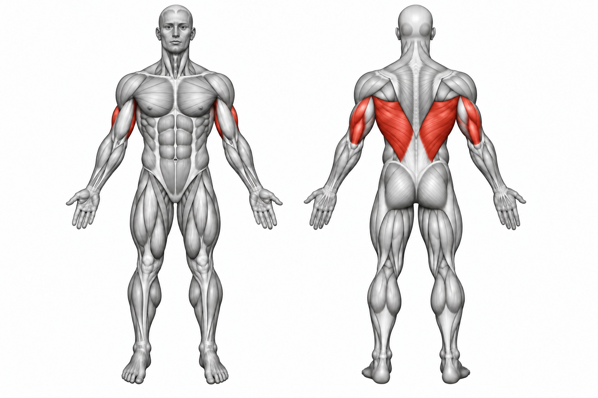
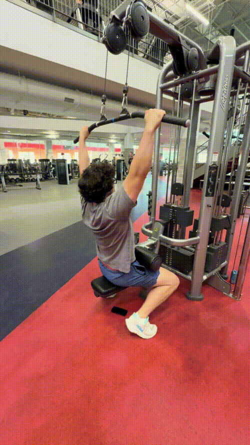

Lat Pulldown


How to Perform
Sit at the lat pulldown machine and secure your legs under the pads. Grip the bar slightly wider than shoulder-width apart with your palms facing forward.
Pull the bar toward your upper chest by driving your elbows down and back. Pause briefly, then slowly allow the bar to return to the starting position while keeping control of the weight.
Primary Muscles
Latissimus dorsi (Lats)
Secondary Muscles
Biceps brachii (Biceps), trapezius (Traps), and posterior deltoid (Rear Delt)